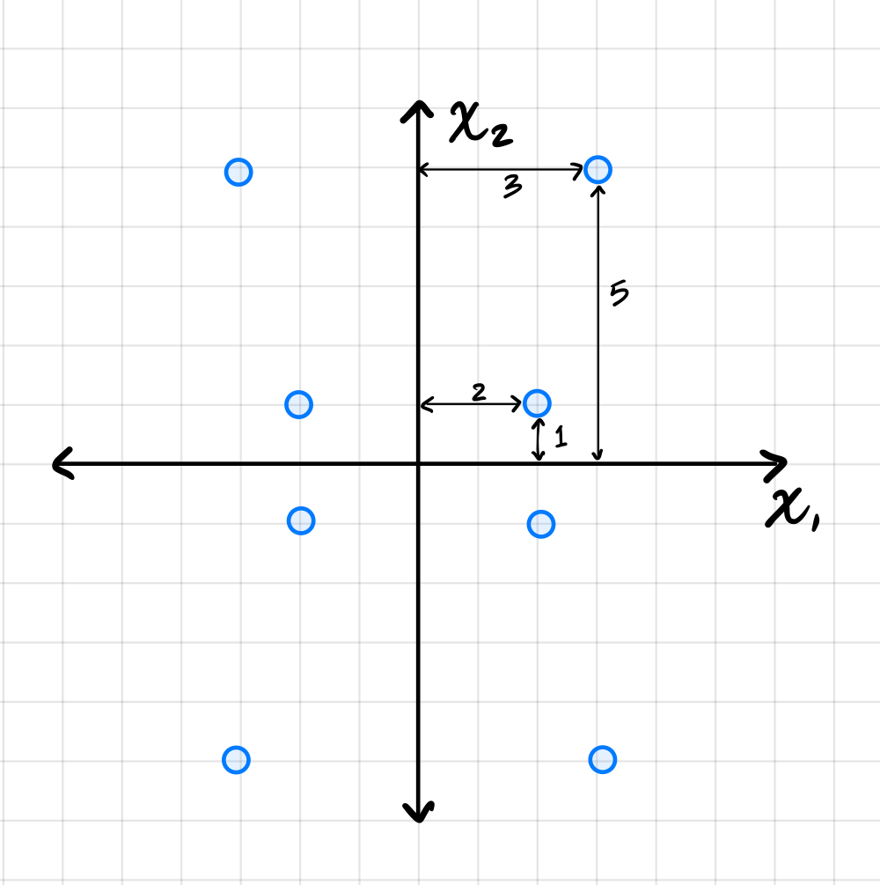
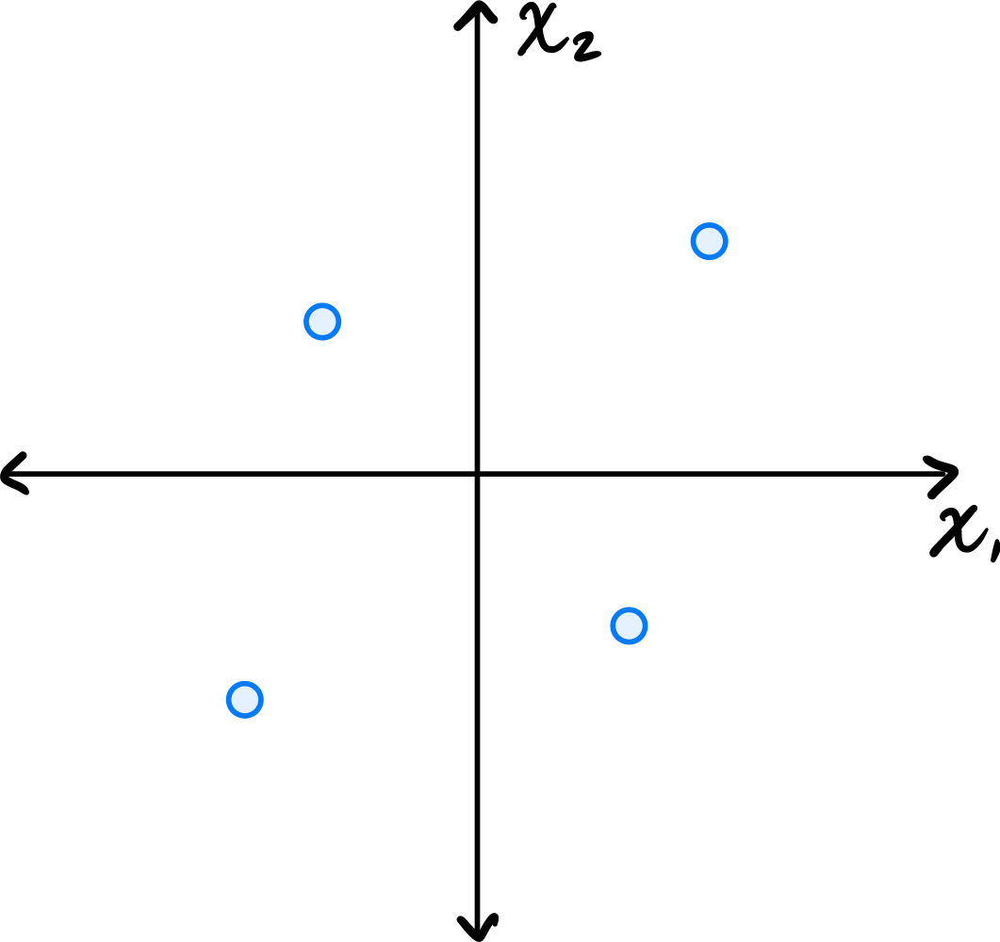
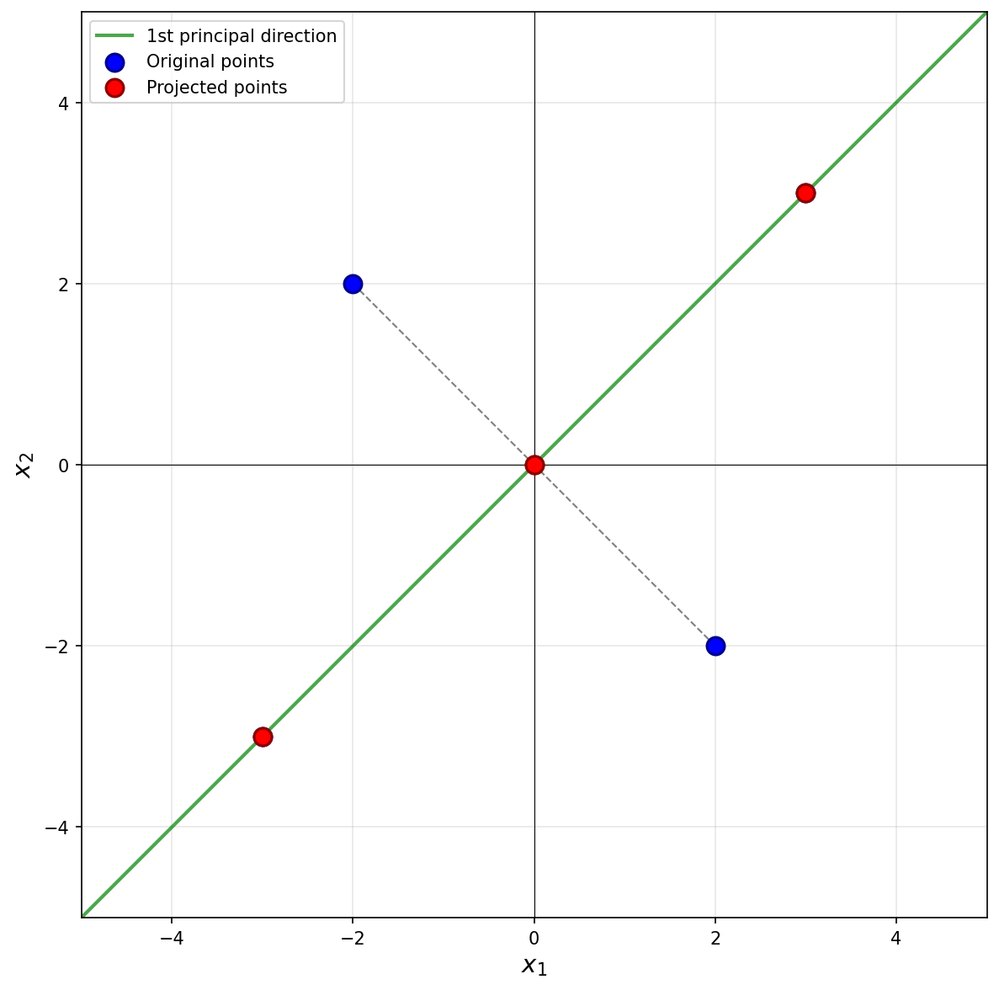

Problems tagged with "reconstruction error"
Problem #86
Tags: reconstruction error, pca, covariance, eigenvalues, lecture-07, quiz-04
Suppose PCA is used to reduce the dimensionality of the centered data shown below from 2 dimensions to 1.

Part 1)
What will be the reconstruction error?
Solution
\(52\).
The first thing to figure out is what the first principal component (first eigenvector of the covariance matrix) is, since this is the direction onto which the data will be projected. Remember that the first eigenvector points in the direction of maximum variance, and in this plot that appears to be straight up (or down). Thus, the first principal component is \((0, 1)^T\)(or \((0, -1)^T\)).
Next, we imagine projecting all of the data onto this line. Since the first eigenvector is vertical, all of the data is projected onto the \(x_2\)-axis. In the process, every point's \(x_1\)-coordinate is lost, and becomes zero, while the \(x_2\)-coordinate remains unchanged. The figure below shows these projected points in red (note that each red point is actually two points on top of each other, since both \((x_1, x_2)^T\) and \((-x_1, x_2)^T\) project to \((0, x_2)^T\)).

To compute the reconstruction error, we find the squared distance between each point's original position and its projected position. Starting with the upper-right-most point at \((3, 5)^T\), its projection is \((0, 5)^T\), and the squared distance between these two points is \((3 - 0)^2 + (5 - 5)^2 = 9\). For the point at \((2, 1)^T\), its projection is \((0, 1)^T\), and the squared distance is \((2 - 0)^2 + (1 - 1)^2 = 4\).
We could continue, manually calculating the squared distance for each point, but the symmetry of the data allows us to be more efficient. There are four points in the data set that are exactly like the first we just considered and which will have a reconstruction error of 9 each. Similarly, there are four points like the second we considered, each with a reconstruction error of 4. Therefore, the total reconstruction error is:
Part 2)
What is the smallest eigenvalue of the data's covariance matrix?
Solution
\(13/2\).
Remember that the smallest eigenvalue of the data's covariance matrix is equal to the variance of the second PCA feature. That is, it is the variance in the direction of the second principal component (the second eigenvector of the covariance matrix), which in this case is the vector \((1, 0)^T\)(or \((-1, 0)^T\)).
The variance of the data in this direction can be computed by
where \(x_i\) is the \(x_1\)-coordinate of the \(i\)-th data point, \(\mu\) is the mean of all the \(x_1\)-coordinates, and \(n\) is the number of data points. Since hte data is centered, \(\mu = 0\). Therefore, we just need to compute the average of the squared \(x_1\)-coordinates.
Reading these off, we have four points whose \(x_1\)-coordinate is \(3\) or \(-3\), and four points whose \(x_1\)-coordinate is \(2\) or \(-2\). So the variance is:
Therefore, the smallest eigenvalue of the data's covariance matrix is \(13/2\).
Problem #90
Tags: reconstruction error, pca, covariance, eigenvalues, lecture-07, quiz-04
Consider the centered data set consisting of four points:
Suppose PCA is used to reduce the dimensionality of the data from 2 dimensions to 1.

Part 1)
What will be the reconstruction error?
Solution
\(16\).
The first thing to figure out is what the first principal component (first eigenvector of the covariance matrix) is, since this is the direction onto which the data will be projected. Remember that the first eigenvector points in the direction of maximum variance. Looking at the data, the points \((3, 3)^T\) and \((-3, -3)^T\) are farther from the origin than the points \((-2, 2)^T\) and \((2, -2)^T\), so the direction of maximum variance is along the line \(x_2 = x_1\). Thus, the first principal component is \(\frac{1}{\sqrt{2}}(1, 1)^T\)(or \(\frac{1}{\sqrt{2}}(-1, -1)^T\)).
Next, we imagine projecting all of the data onto this line. The figure below shows these projected points in red.

Notice that the points \((3, 3)^T\) and \((-3, -3)^T\) already lie on the line \(x_2 = x_1\), so they project to themselves. Their reconstruction error is zero. The points \((-2, 2)^T\) and \((2, -2)^T\) lie on the line \(x_2 = -x_1\), which is perpendicular to the first principal component. These points both project to the origin \((0, 0)^T\).
To compute the reconstruction error, we find the squared distance between each point's original position and its projected position. For the point at \((-2, 2)^T\), its projection is \((0, 0)^T\), and the squared distance is \((-2 - 0)^2 + (2 - 0)^2 = 4 + 4 = 8\). Similarly, the point \((2, -2)^T\) projects to \((0, 0)^T\) with squared distance \(8\).
Therefore, the total reconstruction error is:
Part 2)
What is the smallest eigenvalue of the data's covariance matrix?
Solution
\(4\).
Remember that the smallest eigenvalue of the data's covariance matrix is equal to the variance of the second PCA feature.
The second PCA feature corresponds to each point's projection onto the second principal component (the second eigenvector of the covariance matrix, and the dashed line in the figure above). In this case, we see that two of the points, \((3, 3)^T\) and \((-3, -3)^T\), project to the origin \((0, 0)^T\), and will have a second PCA feature value of \(0\). The other two points are at \(8\) units away from the origin along this direction, so their second PCA feature values are \(2 \sqrt{2}\) and \(-2 \sqrt{2}\). You could also project these points onto the second principal component to verify this:
Therefore, the second PCA feature values for the four points are 0, 0, 2, and -2. The variance of these (centered) values is: